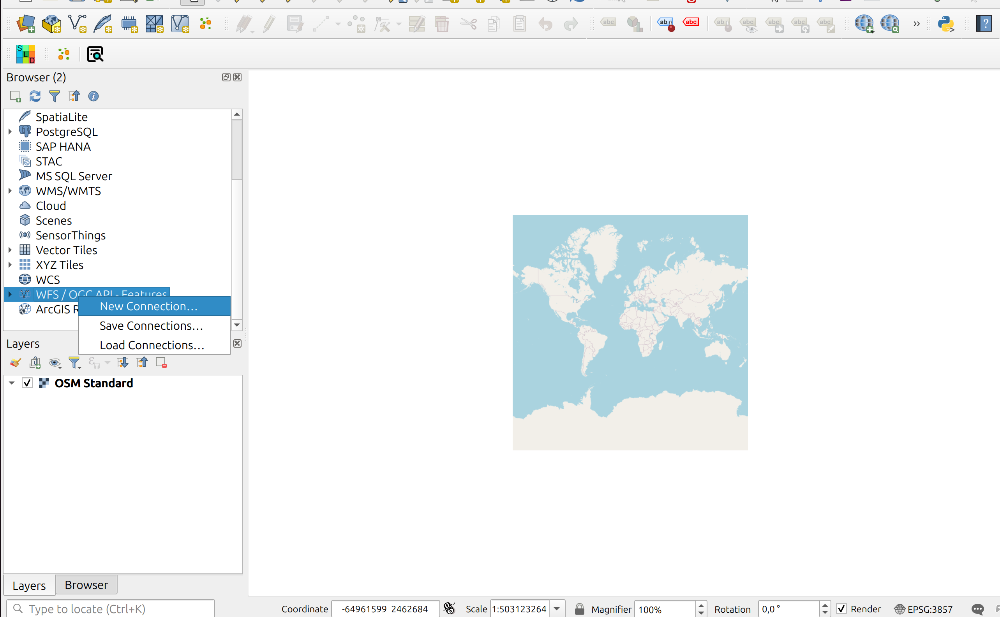
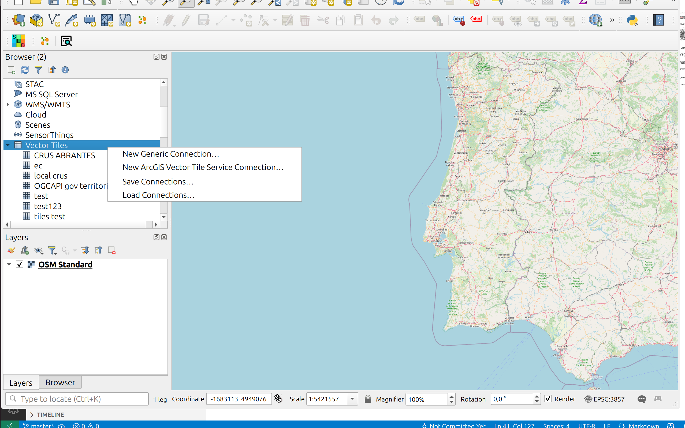
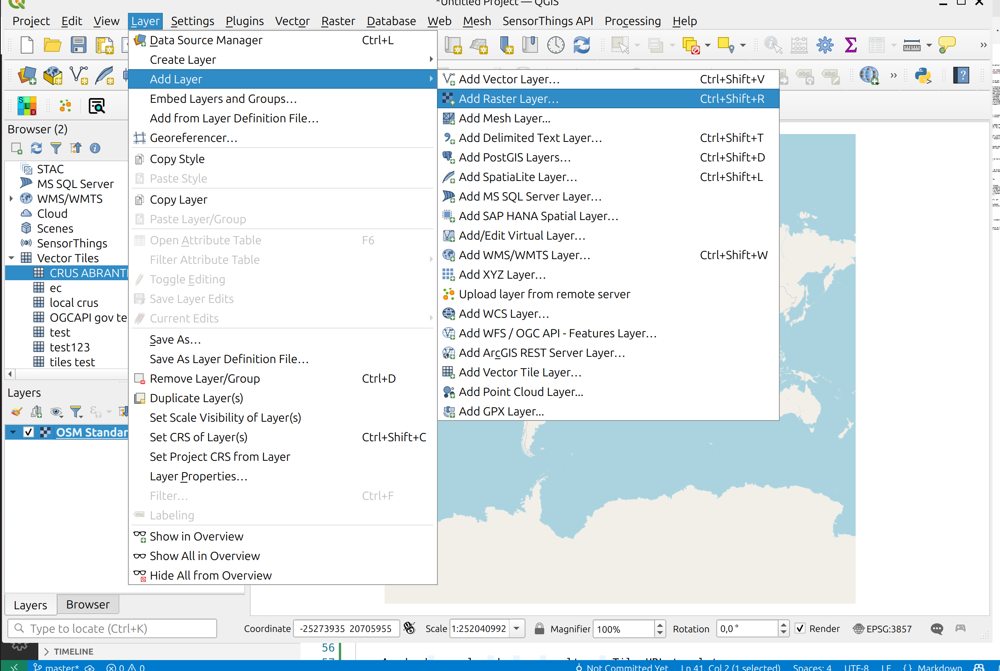
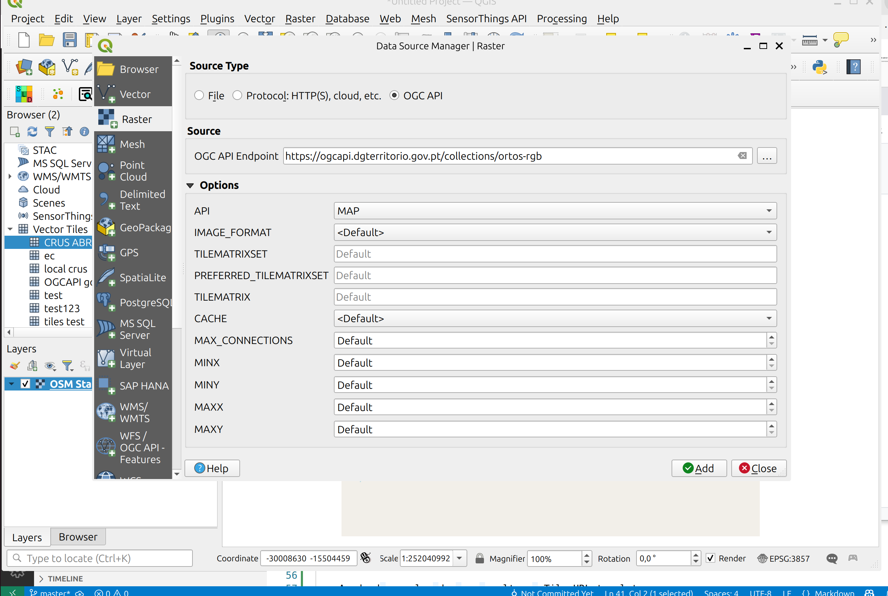

Acesso desde o QGIS
Esta secção ilustra como aceder a dados publicados em OGC API, através da aplicação cliente QGIS.
A lista de clientes que podem aceder a dados publicados em OGC API pode ser consultada nos repositórios de GitHub de cada Standard (por exemplo, OGC API - Features) e inclui aplicações como LeafLet, OpenLayers, GDAL ou ArcGIS.
Info
Para as demonstrações abaixo, foi usada a LTR do QGIS, que no momento em que este manual foi escrito é a 3.40.6. Mais detalhes podem ser consultados na tabela abaixo:
| QGIS version | 3.40.6-Bratislava |
| QGIS code revision | 5d7f6a3e265 |
| Libraries | |
| Qt version | 5.15.13 |
| Python version | 3.12.3 |
| GDAL version | 3.8.4 |
| PROJ version | 9.4.0 |
| EPSG Registry database version | v11.004 (2024-02-24) |
| GEOS version | 3.12.1-CAPI-1.18.1 |
| SQLite version | 3.45.1 |
| PostgreSQL client version | 16.8 (Ubuntu 16.8-0ubuntu0.24.04.1) |
| SpatiaLite version | 5.1.0 |
| QWT version | 6.1.4 |
| QScintilla2 version | 2.14.1 |
| OS version | Ubuntu 24.04.2 LTS |
OGC API - Features
Para adicionar um layer do tipo "OGC API - Features", pode ser utilizado o browser do lado esquerdo, carregando no item "WFS/OGC API - Features" para chamar o context menu, e escolhendo "Nova Ligação".

No passo seguinte, é aberta uma caixa de configuração para introduzir os dados da ligação. Na secção url deve ser introduzido o url da Landing Page da OGC API: https://ogcapi.dgterritorio.gov.pt/. As opcões de WFS são facultativas.

Ao pressionar ok para fechar a caixa anterior, uma nova ligação aparecerá listada debaixo da secção "WFS/OGC API - Features", no browser panel. Ao carregar nesse item para expandir-lo irão aparecer todas as colecções de OGC API - Features, disponíveis no servidor.

Qualquer uma destas colecções pode ser adicionada ao QGIS como layer, fazendo duplo click, ou carregando nela para chamar o menu de contexto e escolhendo "Add layer to project".

Tip
As colecções OGC API - Features também podem ser adicionadas através do top menu "Layer", escolhendo "Add Layer" e "Add WFS/OGC API - Features Layer".

OGC API - Tiles
O QGIS permite adicionar tiles vectoriais com o formato OGC API - Tiles. No browser panel do lado esquerdo, carregar no item "Vector Tiles" para chamar o context menu e seleccionar "New generic connection".

Na caixa de configuração deve-se indicar qual é o "source url" da colecção.
Tip
Para obter "source url" da colecção pode-se consultar o endpoint de tileset metadata. Depois de identificar a colecção de interesse, através do endpoint de colecções, carregar nessa colecção para obter a página da colecção. Por exemplo, se quiseremos os metadados de colecção de "CRUS ABRANTES", podemos carregar nesse link que nos leva até: https://ogcapi.dgterritorio.gov.pt/collections/crus_abrantes. A última parte do url - crus_abrantes- é o nome da colecção.
Para aceder ao tileset metadata, podemos substituir o NOME neste url, por crus_abrantes:
https://ogcapi.dgterritorio.gov.pt/collections/NOME/tiles/WebMercatorQuad/metadata
Acedendo a url podemos consultar o Tile URL template.

Podemos copiar este valor para o "source url" do QGIS, substituindo tileMatrix por z, tileRow por y e tileCol por x:

Depois de aceitar esta configuração, a colecção irá aparecer listada debaixo do item "Vector Tiles". Ela pode ser adicionada ao mapa, carregando para obter o context menu, e depois seleccionando "Add layer to project".

OGC API - Maps
A infraestrutura OGC API da DGT disponibiliza duas colecções como OGC API - Maps: "OrtoSat 30 cm - Portugal Continental - 2023": Cor Verdadeira e Cor Falsa. Para acceder a qualquer uma destas colecções, começamos por identificar o endpoint da colecção através do endpoint de colecções. Por exemplo para o tema "Cor Verdadeira":
Através do menu "Layer", seleccionar a opção "Add Layer" e "Add Raster Layer".

Na caixa de configuração, seleccionar o radio button "OGC API", que irá expandir um menu com opções de configuração.

Na secção "OGC API - endpoint", deve-se preencher o url da colecção que identificámos acima e na API, escolher map. Todas as outras configurações são opcionais. Depois de aceitar esta configuração, a colecção será adicionada ao mapa.